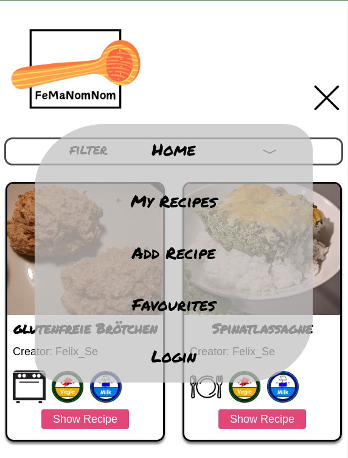
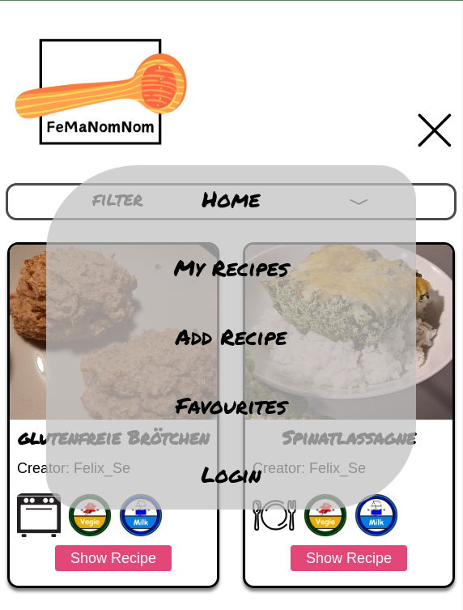

Description
To complete the CS50x course by Harvard University, I developed an entire project independently. My wife and I love cooking, but we often find ourselves scrolling through our phones to locate recent recipes. That inspired me to create FeMaNomNom — a personal recipe database. FeMaNomNom allows users to manage their recipes conveniently. The project is available on GitHub and can be run locally as a Flask application or deployed using a Dockerfile from DockerHub. Once the web app is running, users can create an account and start adding recipes via a simple form. Each submission is stored in an SQLite database, which serves as the backbone for the main page where all saved recipes are displayed.
Used Technology
Html, CSS, JavaScript, Flask
Links
Images
 
